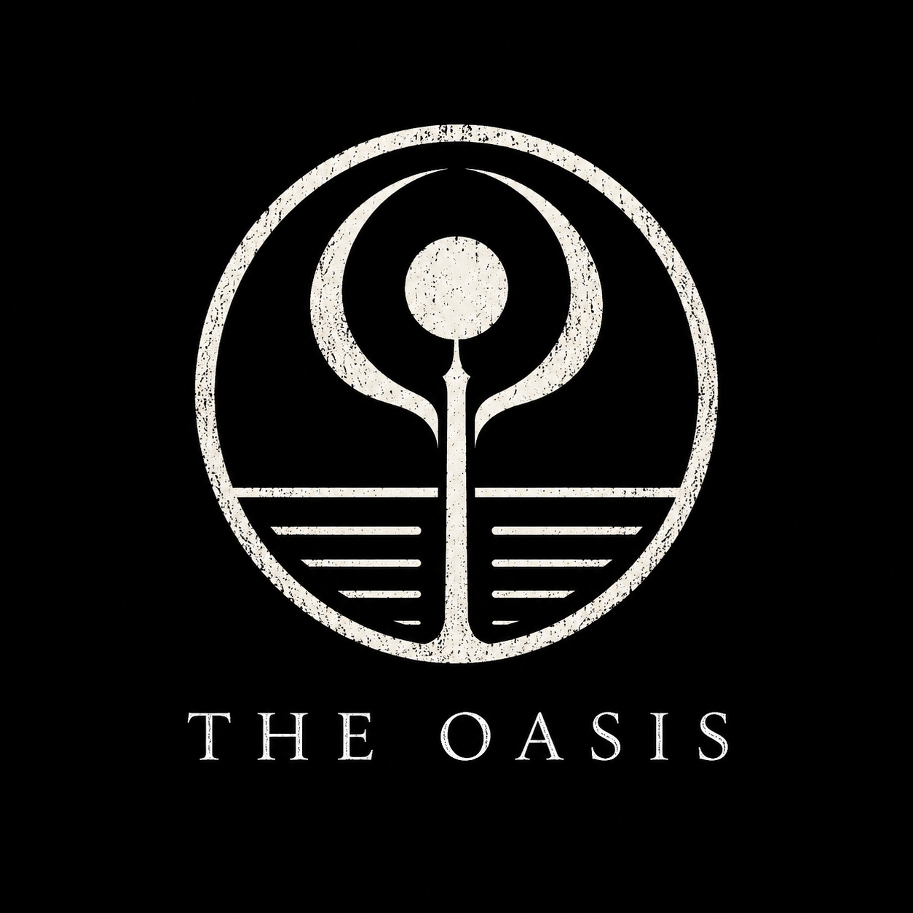

The Oasis
Tags: project-zaman factions faction parent-faction oasis survivors survival founder-legacy fractured
Meaning of the Name
The name The Oasis represents the faction’s original purpose.
An oasis is a rare place of safety in a hostile land: shelter, peace, and the essence of life, water. In the same way, The Oasis swore to become a refuge for what remained of humanity after the Catastrophe, also known as the Oscillation of Eras.

Overview
The Oasis was founded by survivors who wanted to protect what remained of humanity after the Catastrophe.
Its first father figure was The Founder of the Oasis, a leader of strong Arab descent whose presence made the original oath feel personal rather than abstract.
Its early work combined four duties:
- Explore dangerous regions.
- Recover useful resources and relics.
- Record information about the changed world.
- Protect the remaining traces of human civilization.
The faction did not collapse through a calm or mutual separation. After its founder died, two beliefs inside the group became impossible to reconcile:
One side sought knowledge as the path to salvation.
The other remained loyal to the original oath of protecting humanity.
The original Oasis was succeeded by two opposing child factions:
| Child faction | Core belief | Central weakness |
|---|---|---|
| The Order of the Oasis | Humanity must first protect confirmed survivors, territory, and supplies. | Denial: it avoids the uncertain fate of those lost through the Fabrication Demise. |
| The Mirage | Humanity can only survive by uncovering the truth behind the Catastrophe. | Chaos: it gathers evidence faster than it can understand or apply it. |
Neither side believes it destroyed The Oasis. Each believes the other proved that The Oasis had already ceased to exist.
Inspiration
The faction was partly inspired by the Sweepers and Bastards, collectively associated with the Stalkers in Lies of P.
Hierarchy
The Oasis is the parent faction. After the schism, it exists in three forms:
| Layer | Status | Function in the story |
|---|---|---|
| The original Oasis | Broken legacy | The founding oath and shared history both child factions claim. |
| The Founder of the Oasis | Deceased father figure | The personal authority whose absence allows the schism to form. |
| The Order of the Oasis | Active child faction | Discipline, protection, territory, and resource security. |
| The Mirage | Active child faction | Exploration, field records, forbidden sites, and the search for answers. |
The parent note should hold shared history, faction-wide systems, and outcome logic. The child notes hold each faction’s ideology, behavior, locations, and weaknesses.
The Schism
The conflict began when two influential groups disagreed over which problem humanity had to solve first.
Conditions throughout the world were becoming worse. Many members had already been lost, including the founder of The Oasis, who had served as a fatherly figure to the survivors. With the founder gone, the faction slowly lost its unity.
Some members wanted to change the old oath. They believed The Oasis should actively search for knowledge, investigate the Catastrophe, and uncover a possible path toward humanity’s salvation.
Others rejected this. They argued that knowledge alone offered no immediate protection. In their view, the faction’s duty was to confront the dangers already threatening humanity rather than spend its remaining strength chasing answers that might never save anyone.
The First Departure
The loyalists came to see the original Oasis as impure. To them, the faction had not merely changed its methods; it had betrayed the founder’s purpose.
They separated and formed The Order of the Oasis.
The name was both a declaration and a judgment. By calling themselves an Order, they presented their faction as the disciplined continuation of the founder’s original duty.
The Naming of The Mirage
Those left behind viewed the Order’s departure as selfish, arrogant, and self-righteous. From their perspective, the loyalists had abandoned their companions during a crisis, claimed sole ownership over the founder’s legacy, and condemned anyone who believed the old methods had failed.
In time, they accepted a new name: The Mirage.
The name came from a bitter conclusion:
If The Oasis is no longer there, then what remains must be The Mirage.
To them, the safety promised by The Oasis had always been temporary. Its stability was an illusion, and the original oath could only delay humanity’s destruction rather than prevent it.
Shared Enemy
Despite their ideological conflict, both child factions recognize Anthropos as their common enemy.
However, neither faction understands Anthropos’s true nature.
Only the player knows that the beings they call Anthropos are actually tied to Gibborim, the hidden authority behind the cult.
This hidden truth becomes especially important when members of either faction discover the player’s identity.
NPC Encounters
The player may encounter faction members during hostile confrontations, passive scenes, exploration events, or faction-related quests.
Every major NPC should have a clear:
- Personality.
- History.
- Motivation.
- Relationship with their faction.
- Opinion of the opposing side.
- Reaction to the player’s identity.
Some members may have personal relationships with people from the opposing faction. Former friends, relatives, mentors, and companions may now stand on opposite sides of the schism.
Most of these NPCs are not inherently cruel or evil. Their beliefs were shaped by loss, territory, duty, and the stories their faction told them after the founder died.
The schism should remain personal as well as ideological. Order members may believe former companions abandoned humanity’s immediate needs. Mirage members may believe the Order abandoned them first and then rewrote the meaning of loyalty.
Their accusations are strengthened by each faction’s visible failure:
- Order members can point to years of Mirage expeditions that produced fragments, stories, and relics, but no dependable salvation.
- Mirage members can point to the Order’s refusal to investigate the unconfirmed fate of the population lost through the Fabrication Demise.
Neither side is entirely wrong. Neither side is doing enough.
Solo and Grouped NPCs
Solo faction members are generally more:
- Rebellious.
- Capable.
- Unpredictable.
- Sharp-witted.
- Willing to question orders.
Members encountered in groups are generally more:
- Passive.
- Disciplined.
- Dependent on faction authority.
- Protective of one another.
- Likely to follow established commands.
These are broad tendencies rather than absolute rules.
Reactions to the Player’s Identity
When NPCs discover the player’s true identity, their reactions vary according to their personality, beliefs, and past experiences.
Some may become terrified. Others may immediately draw their weapons and attack.
During these confrontations, the player may be able to:
- Kill the NPC.
- Knock them unconscious.
- Continue fighting until they surrender.
- Spare them.
- Question them.
- Take their possessions.
After an NPC has been defeated or forced to surrender, the player may collect ordinary loot.
However, trying to loot them again provokes a stronger reaction. The remaining item holds personal value, and the NPC becomes furious if the player tries to take it.
This final possession may be:
- A personal letter.
- A family relic.
- A faction insignia.
- A photograph.
- A journal page.
- A unique tool.
- A symbolic weapon.
- Another collectible tied to the NPC’s history.
Taking these possessions may affect the NPC, their allies, and the player’s reputation.
Story Impact
The player’s treatment of The Mirage and the Order of the Oasis can significantly influence faction relationships and parts of the main story.
| Path | Outcome |
|---|---|
| Remain a bystander | Neither faction fully trusts the player. The division continues, and faction opportunities stay limited. |
| Support The Mirage | The Mirage gains morale, respect, access to cult sites, and more evidence. The Order loses trust. Much of the evidence may still need outside interpretation. |
| Support the Order of the Oasis | Confirmed survivors receive stronger protection. The Order gives the player access to protected regions and resources. The fate of the Fabrication Demise victims remains neglected. |
| Infiltrate the Order for The Mirage | The Mirage gains control through betrayal. The Order suffers heavy casualties, and surviving Order NPCs may become permanently hostile. |
| Infiltrate The Mirage for the Order | The Order strengthens its authority. The Mirage suffers heavy casualties, and cult-related knowledge may be lost. The surviving Mirage NPCs may become permanently hostile. |
| Wage war against both factions | Both sides suffer heavy casualties. The player gains material rewards but loses lasting support, making the story darker. |
| Rebuild The Oasis | The player reconciles both sides, restores the parent faction, and creates the strongest positive outcome. |
Rebuild The Oasis
The player becomes the unifying figure both factions lost when the founder died.
This route does not declare either child faction wholly correct. It exposes the weakness in both interpretations:
- The Order must accept that protecting only confirmed survivors while denying the uncertain fate of countless others is not true devotion to humanity.
- The Mirage must accept that bravery, travel, and written records cannot replace knowledge, method, and disciplined analysis.
The player must prove that the two sides possess incomplete parts of the same solution:
- The Order provides discipline, logistics, secure territory, and the means to protect people during a long investigation.
- The Mirage provides field experience, access to forbidden regions, combat skill, and written records of discoveries the Order refused to pursue.
Only then can the two sides reunite and restore the original faction:
The Oasis
Consequences
- Zero faction casualties.
- Maximum morale.
- Maximum respect from both sides.
- The Mirage and the Order reunite.
- Former enemies begin working together.
- The restored Oasis combines exploration, research, protection, and recovery.
- The restored Oasis becomes a major positive force in the main story.
This is the most difficult faction outcome. It requires the player to understand individual members, resolve personal conflicts, challenge both factions’ historical narratives, and earn trust from both sides.